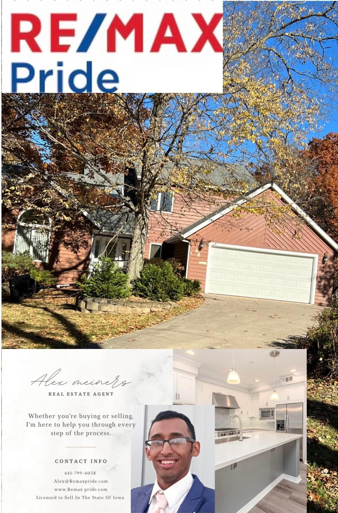

Rollerblading has been a huge passion of mine and I have seen musicals and dances, but no Rollerblading dance offs. I began thinking about writing a book about rollerblading dance and that All ages can read. One of my favorite parts of writing is the style and creativity behind the book story.
The unique part of writing a book is that you get to start from scratch and build. Rollerblading is a great outdoor activity, but does possess risks if your not careful. I taught myself how to rollerblade and ever since then I have fall in love with skating in my free time. Writing a story was never something I even dreamed of, but it has been a hightlight throughout my life.
HOBBIES
I am a member of the Latter Day Saints Church of Jesus Christ. I have have been an active member and recieved callings. The callings consist of YSA Representaive, and Youth Activites Coordinator. The nice part about being part of an organization, like a church is you get to meet so many wonderful people.
I am a Real Estate Agent with REMAX PRIDE here in Ottumwa, IA Being a Real Estate Agent has been a huge blessing to provide the best services for my clients when looking at buying or selling Real Estate Property. Check out one of my Property sales, underneath!!.
Fun Fact! Did you know that my very 1st sale was on October 31st!! Happy Halloween!
| Alto Saxophone | Woodwind Instrument |
|---|---|
| Years in Band | 8 years |
| Marching Band | Competed in 4 years |
| Saxophone compenents | Body, Neck/strap, Ligature, Reed, Mouth Piece. |
My first year of High School Marching Band our theme song was Pirates of the Caribbean.